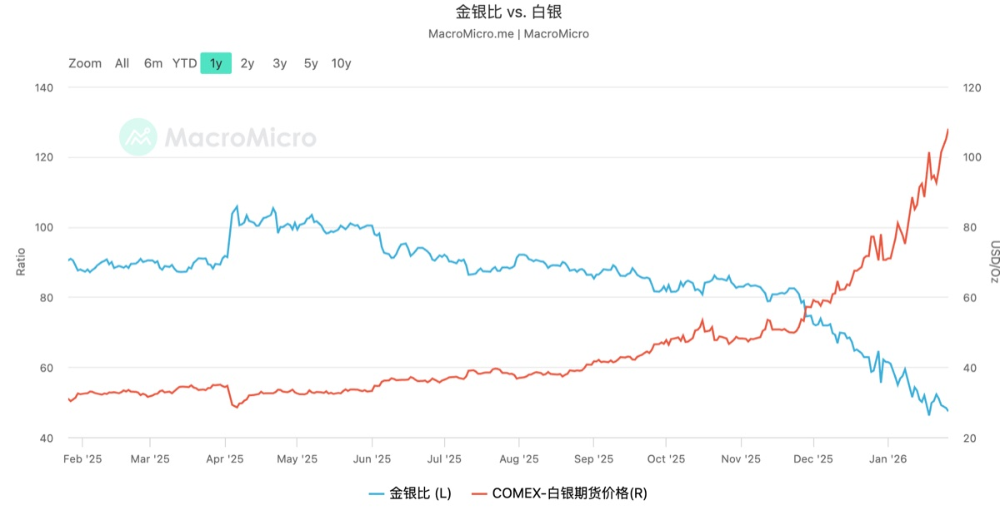
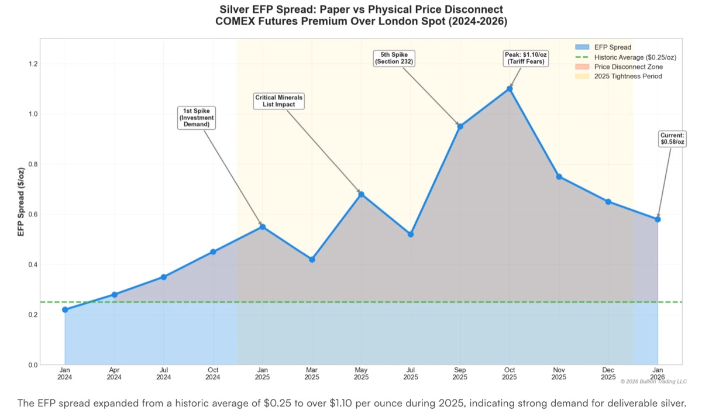
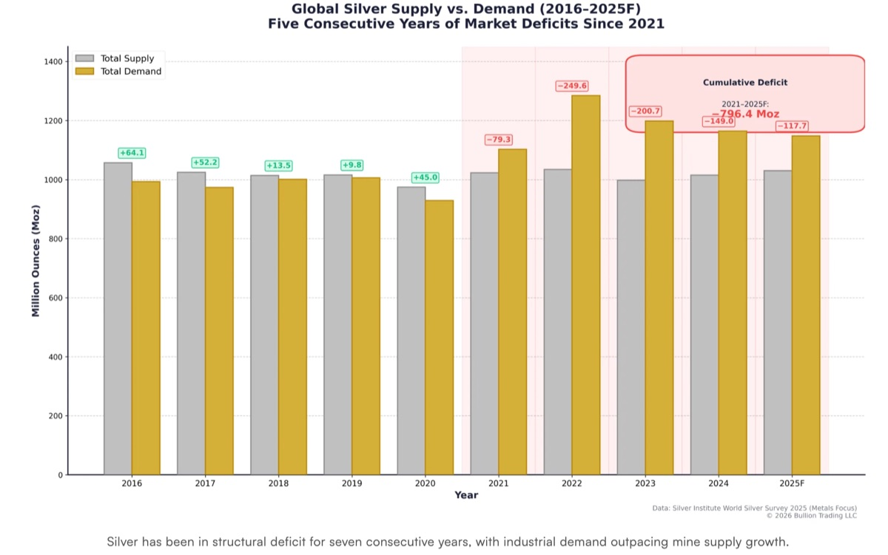
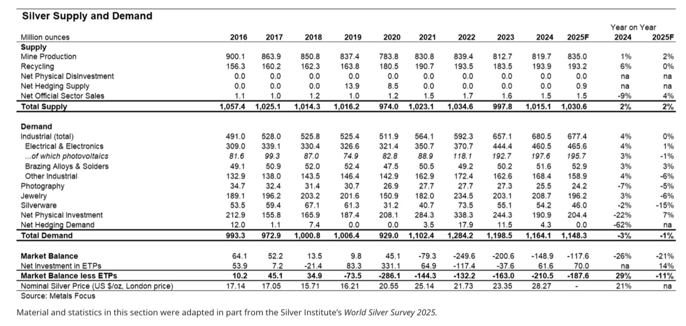
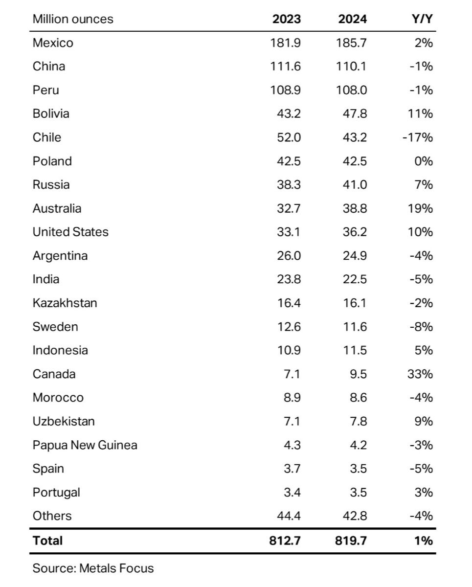

Market Anomalies
- The gold-silver ratio has continued to fall [1]1Gold-silver ratio and silver price over the past year..
{kind=link}

- The EFP (Exchange for Physicals) spread has remained above its historical average [2]2China Financial Futures Exchange, Exchange for Physicals reference document..
EFP measures the futures-spot spread. It usually includes delivery, storage, transportation, liquidity premium, and funding cost.1
{kind=link}

- Silver has been in structural deficit for years [3]3Paper silver vs. physical silver price disconnect, 2026..
The silver balance sheet has been in deficit for seven consecutive years.
{kind=link}

Basic Facts About Silver
Silver has both commodity attributes and financial attributes [4]4Guosen Securities, Silver Industry Report: A Rising Precious Metal, 2024-11-23..
{kind=link}

Supply side:
- Mine production (80%)
- Recycling (20%)
Demand side:
- Industrial demand (60%)
- Net physical investment (19%)
- Jewelry and silverware (20%)
- Photography (1%)
- Net hedging demand (0%)
South America and China are major suppliers.
{kind=link}

Silver prices have shown a strong upward trend over the past year, with international silver repeatedly reaching new highs. From early 2025 to January 2026, COMEX silver futures rose by more than 220%, climbing from about USD 30/oz and briefly approaching USD 100/oz in January 2026, setting a historical record. In October 2025, silver broke through the previous high of USD 50 set in 1980 and reached about USD 54/oz around October 17. It then fell by more than 10% on profit-taking and exhaustion of good news, retreating to around USD 47. The correction was brief. Starting in November, silver bulls returned, and the price moved back above USD 50 and accelerated upward. In early December 2025, COMEX silver futures broke through USD 60 for the first time. In January 2026, rising geopolitical tension triggered another wave of safe-haven buying, pushing silver sharply higher. The March delivery contract once climbed above USD 95/oz in late January, and spot silver historically crossed USD 100/oz on January 23-24. In short, silver produced an almost parabolic rally, ending the year at more than three times its starting price and far outperforming gold's roughly 78% gain over the same period.
This silver rally occurred across major markets. COMEX silver futures and London spot silver both reached historical highs in December 2025. For example, on December 3, COMEX silver futures reached an intraday high of USD 59.655/oz, while London spot silver reached USD 58.945/oz. In China, the main silver futures contract on the Shanghai Futures Exchange also repeatedly reached new highs, closing at RMB 13.58/g in early December 2025, up more than 90% from the start of the year. The Shanghai Gold Exchange silver T+D spot contract also reached a historical high of RMB 13.54/g. Domestic and international silver prices moved with unusually tight linkage, with the correlation between SHFE silver futures and COMEX silver futures reaching 0.96. As prices surged, trading volume and open interest increased sharply. On December 3, 2025, SHFE silver recorded daily volume of 2.66 million lots, open interest of 458,000 lots, and warehouse inventory fell to a low of 476 tons, indicating extremely active trading and tight spot supply.
Technically, silver prices kept moving above medium- and long-term moving averages and experienced several episodes of accelerated upward movement, with volatility expanding significantly. Since the second half of 2025, annualized volatility in silver futures has risen to about 60%, far above its historical average.
Industrial Demand, Inelastic Supply, and Tight Spot Inventory
Electrical and electronic products have long been the largest driver of silver demand. According to the Sprott silver report [5]5Sprott, Silver Investment Outlook, mid-year 2025., consumption has increased by 51% since 2016. Silver is the most electrically conductive metal on Earth, making power systems and electronic devices its fundamental demand base.
New energy, AI compute, and data centers have become new engines of silver demand. In 2025, the photovoltaic industry consumed about 7,560 tons of silver, roughly twice the 2022 level, and its share of total global silver demand surged from 20% to 55%. This means photovoltaics alone contributed more than half of total silver demand, overturning the traditional demand structure. In addition, the global electric vehicle industry consumed about 2,566 tons of silver in 2025, an increase of 520 tons year over year, or more than 12%. 5G base stations, AI servers, and data centers also became emerging sources of demand. A single AI server uses more than 30% more silver than traditional equipment. These new applications formed the four major pillars of global silver demand in 2025. Although traditional demand such as jewelry and silverware declined slightly because of high prices, with global silver jewelry demand expected to fall by about 5% year over year to 205 million ounces in 2025, strong industrial demand more than offset the decline and pushed total demand higher [6]6Explosive growth in global demand pushes silver prices to new highs..
On the supply side, silver production growth has been weak and unable to keep up with demand expansion. Global mined silver output in 2025 was about 820 million ounces, or roughly 25,500 tons, down 12% from its 2020 peak. This marked the fifth consecutive year in which global mine output declined or stayed flat. The main reason is that silver is often a by-product metal, so its production depends on the mining of copper, lead, zinc, and other primary metals. Silver supply therefore cannot quickly expand simply because silver prices rise. Major silver-producing countries such as Peru and Mexico have faced declining ore grades, insufficient project investment, and even labor disruptions, causing mine supply growth to stagnate. In addition, global recycled silver supply in 2025 rose only slightly by 1.2% to 197 million ounces, or 6,140 tons, far below the growth rate of industrial demand. The supply side therefore had almost no elastic increment [7]7Explosive growth in global demand pushes silver prices to new highs..
The supply-demand gap directly depleted tradable silver inventories and made the spot market extremely tight. In the second half of 2025, visible global silver inventory fell to dangerous levels. By year-end, available global inventory was equivalent to only about 1.2 months of consumption, far below the 3-6 month safety range. London silver inventory, a key global pricing center, fell below 4,000 tons, and deliverable physical silver was less than 10% of annual global demand. Silver bar inventory in designated warehouses of the Shanghai Futures Exchange also fell to 715 tons, a seven-year low. COMEX registered inventory briefly dropped to a multi-year low of about 120 million ounces, or about 3,735 tons, in early October 2025. Although inventory recovered to nearly 200 million ounces by year-end due to transfers, it remained far below pre-pandemic levels. The ratio of COMEX deliverable inventory to open interest fell to 23%, meaning shorts faced difficulty in physical delivery. The tight supply also appeared in spot premiums: in the second half of 2025, spot silver maintained a persistent premium over futures prices, with the highest premium exceeding 5%, a direct signal of physical scarcity.
Short Squeeze
Social media has repeatedly claimed that JPMorgan [8]8JPMorgan Chase & Co. market page. and other large banks are close to collapse because of their short silver positions. Each repo operation or overnight funding number has been linked to some theory about bank losses in precious-metal positions.
Some market narratives argue that the current silver futures market is preparing for a short squeeze [9]9Short-squeeze market narrative example..
Silver Reserves
Russia Included Silver in Official Reserve Assets
At the end of 2024, the Russian government explicitly planned for the first time to increase its reserve holdings of silver in the federal budget draft. According to reports from Interfax and Bloomberg, Russia's 2025-2027 budget proposed allocating 51.5 billion rubles, or about USD 535 million, to increase reserves of precious metals including gold, platinum, palladium, and silver [10]10Russia media report.. However, as of mid-2025, the Russian central bank had not disclosed further purchase details, suggesting that the plan was still in preparation [11]11Russian precious metal sales to China up 80% to USD 1 billion in H1 2025..
In addition to Russia, Mexico's central bank reportedly holds a small amount of silver reserve assets. Because Mexico is the world's largest silver producer, Banxico maintains some silver holdings in its reserves, though the scale is relatively small. Mexico's silver holdings partly reflect the importance of domestic silver mining to its economy. This can be seen as a special case caused by historical and industrial factors rather than a recent policy shift, but it still shows that silver has a place in the reserve systems of some silver-producing countries [12]12Saudi Central Bank buys USD 40 million in SLV and silver miners, but it's not what you think..
Saudi Arabia has not directly listed silver as an official reserve asset, but its central bank, also linked to sovereign wealth management, showed interest in silver assets in 2025. According to U.S. SEC filings, the Saudi central bank bought 932,000 shares of the iShares Silver Trust (SLV), worth about USD 30.58 million, in the second quarter of 2025, and also bought about USD 9.8 million of silver mining ETF shares. This investment totaled around USD 40 million and drew market attention to the idea of central banks buying silver. However, analysts noted that Saudi Arabia's move was more likely a financial investment through a sovereign fund rather than holding silver as a monetary reserve. The SLV position was small in the Saudi fund portfolio compared with its energy and U.S. equity ETF investments. Some analysts stressed that if a central bank truly wanted to monetize silver, it should buy physical silver rather than paper silver ETFs. Saudi Arabia's example therefore looks more like investment diversification than a fundamental official reserve policy shift [13]13Saudi Central Bank buys USD 40 million in SLV and silver miners, but it's not what you think..
Policy Signals and Willingness to Hold Silver Reserves
Although formal actions remain limited, some countries have shown interest in or discussed the possibility of holding silver as a future reserve asset. Russia's clear plan to accumulate silver itself indicates such willingness. Against the background of Western sanctions and de-dollarization, Russia hopes to diversify risk by accumulating precious metals including silver. Some analysts interpret this as part of Russia's effort to reshape its foreign-exchange reserve structure and reduce dependence on the dollar.
Other BRICS countries are also speculated to potentially follow this trend. Australian financial journalist Tim Treadgold argued that Russia's BRICS partners, such as China, India, and Brazil, may recognize the strategy of increasing precious-metal reserves, including silver, to bypass the dollar. However, it should be emphasized that as of the end of 2025, none of these countries had formally announced a central-bank policy of including silver in reserves. China's central bank has continued buying gold in recent years, but no public statement has involved silver reserves. India and Brazil have also not announced silver reserves, though market observers are watching whether they may be influenced by Russia.
India has not announced central-bank silver reserves, but it has released policy signals recognizing silver's value. In 2025, the Reserve Bank of India decided that starting in April 2026, banks and NBFCs would be allowed to accept silver jewelry and silver coins as loan collateral. Under the new rules, borrowers may pledge up to 10 kilograms of silver jewelry or 1 kilogram of gold as collateral for small loans. This effectively recognizes silver's value relative to gold at a 10:1 weight ratio. Although this does not directly increase central-bank foreign-exchange reserves, it formally gives silver a financial function similar to gold for the first time. Some analysts describe it as a milestone in India's remonetization of silver. Indian economists have noted that the policy strengthens silver's monetary attribute at the grassroots financial level and objectively recognizes silver as a store of value.
On the other hand, some countries have explicitly expressed caution or even rejected the idea of including silver in reserves. At the 2024 LBMA conference, representatives from the central banks of Mongolia and the Czech Republic publicly stated that silver was too volatile to serve as a central-bank reserve asset. They emphasized that compared with gold, silver has higher volatility, and they had no plans to increase silver reserves. Not all countries therefore accept the idea of silver entering reserve systems. Some central banks remain cautious or negative.
Next Questions
- Changes in silver demand from Russia's trading partners
- The survival line of silver as an industrial raw-material cost
- Spot silver supply pressure, multi-collateral asset bubbles, and market speculation
- Correlated volatility among silver, gold, photovoltaics, AI, electricity, and related assets